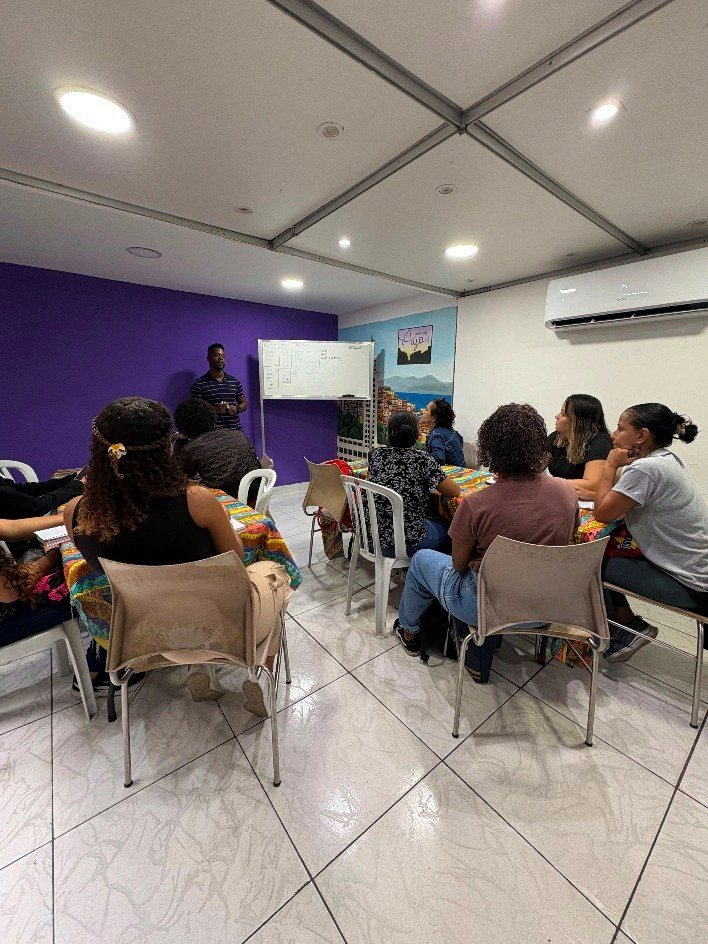

Quer ser parceiro
Museus, centros de referência, universidades, empresas e organizações sociais. Escreva para adrianasiqueira@institutoayo.org contando o que tem em mente. A Metodologia Odara foi desenhada para ser replicável em outros territórios.

A porta fica na Rua Bento Ribeiro, na Gamboa, no Centro do Rio. O WhatsApp responde durante a semana.
As turmas são gratuitas e abrem ao longo do ano. As vagas são poucas e acabam rápido, então o caminho mais curto é falar com a gente pelo WhatsApp e pedir para entrar na lista da próxima turma.
Quem chega pelo CRAI, pelo CEAM ou pela Casa da Mulher Cidadã pode dizer isso na mensagem, porque temos vagas reservadas para encaminhamento da rede.
O Instituto também encontra a vizinhança no Mercado Popular Leonel Brizola, na entrada do Morro da Providência.
Museus, centros de referência, universidades, empresas e organizações sociais. Escreva para adrianasiqueira@institutoayo.org contando o que tem em mente. A Metodologia Odara foi desenhada para ser replicável em outros territórios.
Temos fotos em alta resolução, dados de impacto e porta aberta para visita na sede. Veja também o que já saiu em Na Imprensa.
Cada turma custa material, instrutor e transporte para as alunas. Fale com a gente pelo WhatsApp para saber como apoiar uma turma inteira ou um ciclo da Trilha Odara.